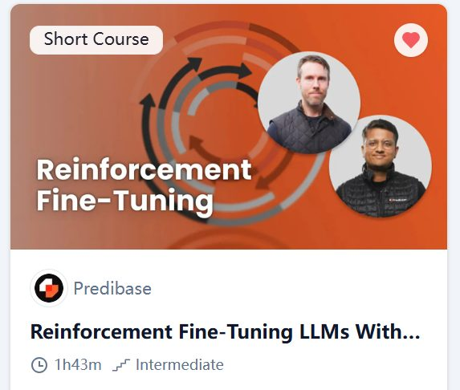
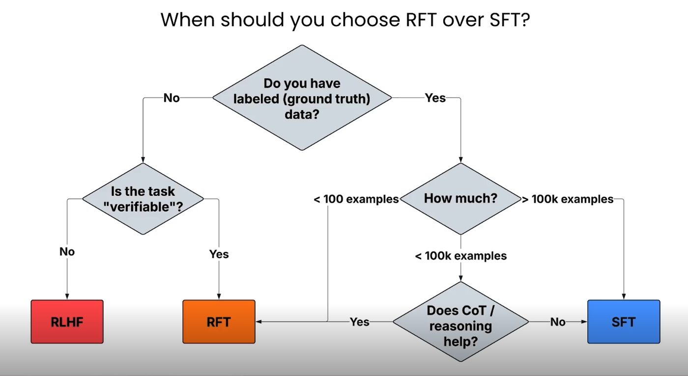
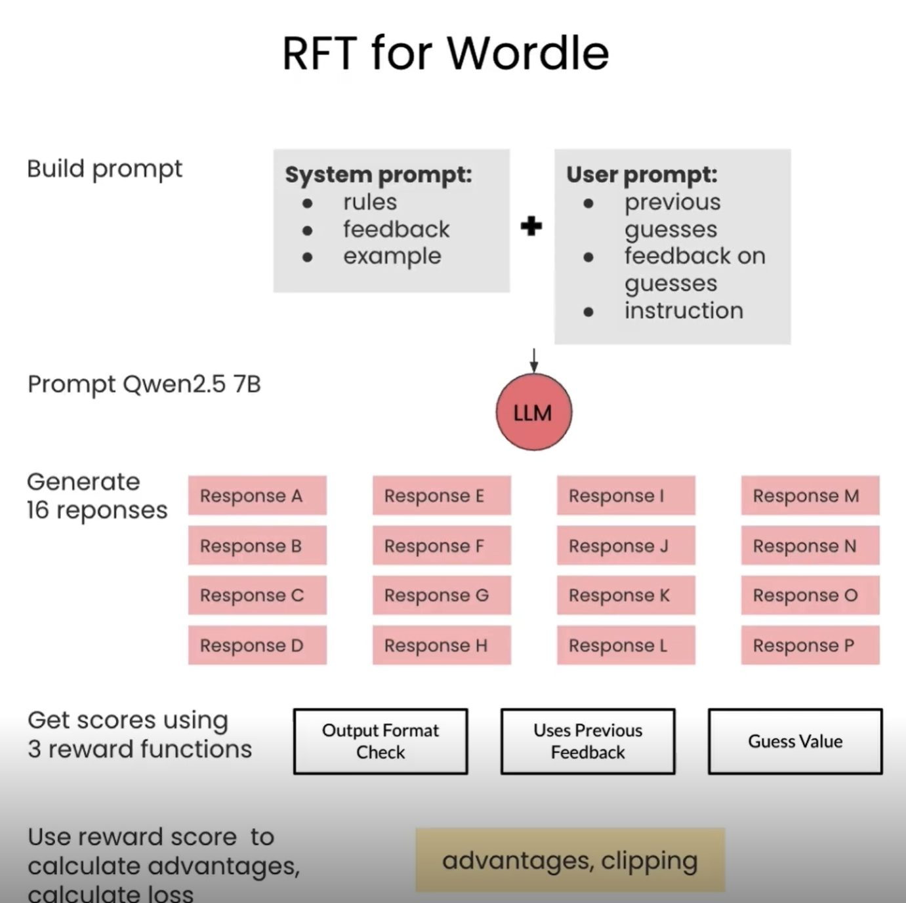
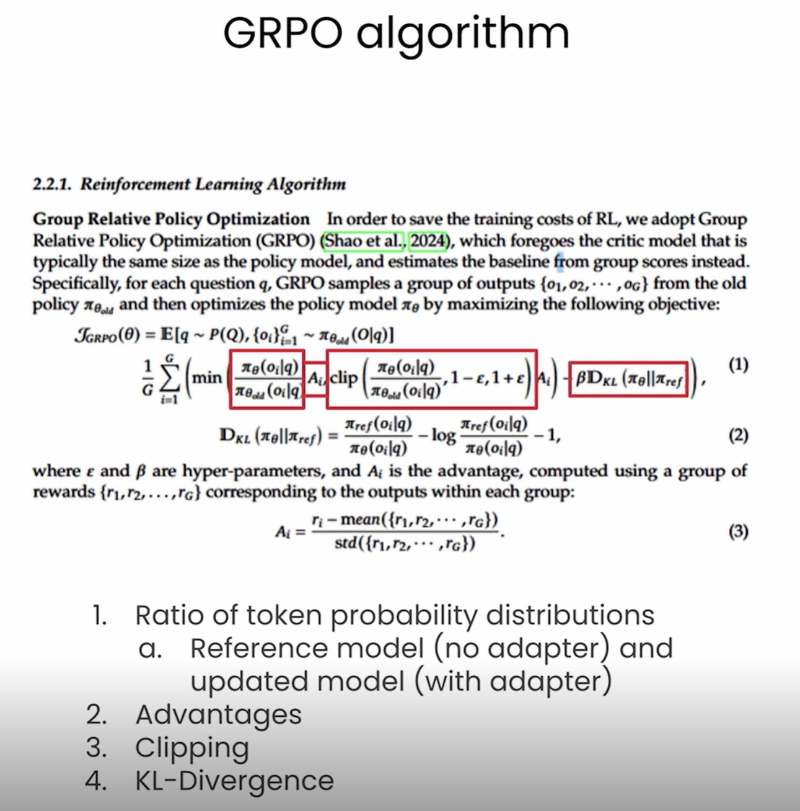
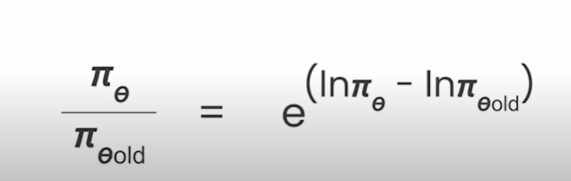
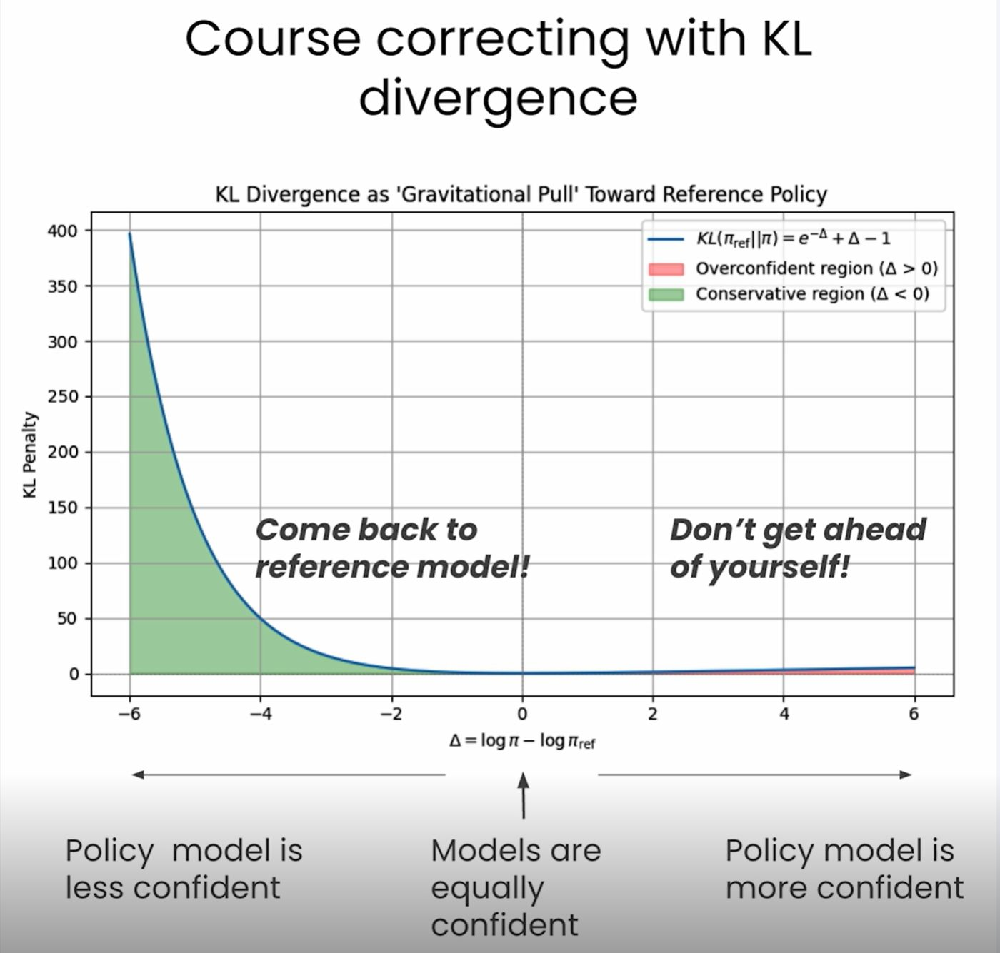

Learning Record 07
Reinforcement Fine-Tuning LLMs with GRPO

网站：DeepLearning.AI - Learning Platform
总体
我必须说，这节课的收获超出了我的预期。这门课刚开始上起来的时候意思倒不是很够，主要是介绍一些关于RFT的笼统知识（也许强化了我的instinct），然后是关于RL结合Wordle这门游戏的一些铺垫，包括不同的奖励函数设计（比如binary reward，partial credit reward，还有LLM-as-a-judge）。
关于LLM-as-a-judge，提出了一个较为有趣的方法，就是先让LLM根据原文transcript生成quiz，再让LLM用待训模型生成的summary来做题从而得到得分，但是这种方法存在reward hacking的风险，因为把原文（不概括一点）直接发给LLM做题得到的奖励会很高，所以为了防止这种情况，在奖励函数中又添加了summary长度惩罚的机制。
最后就是最精彩的部分，让我非常沉浸！！！就是课程中关于GRPO对损失函数（或者说是奖励函数）的手写代码，通过看这些代码，加上结合训练流程，让我对那个公式有了更深的理解，也让我对这方面产生了更强烈的兴趣，话说回来，我最好之后自己总结一下这个公式，包括组成部分，KL散度等


（本课一个主线）


(GRPO算法公式)
（公式有四个主要部分，然后第二张图是在代码中使用的一个技巧）
（这是损失函数的公式所在网页：DeepLearning.AI - Learning Platform，作者在教的时候是逐步加功能的，所以很清晰，值得回顾，特别是每个token算概率那里，很好地补了常识！）
主要流程
Create reference and policy models
Calculating the policy loss ratio
Adding clipping to the policy loss
Adding KL Divergence to the loss
（advantage在原流程中没有写出求得流程，而是直接使用，但相关原理还是很好理解的）
———————————————————————————
（KL散度直观理解）

—————————————————————————————
总结：一个很好的课，主要帮我补了很多理论知识和实践知识